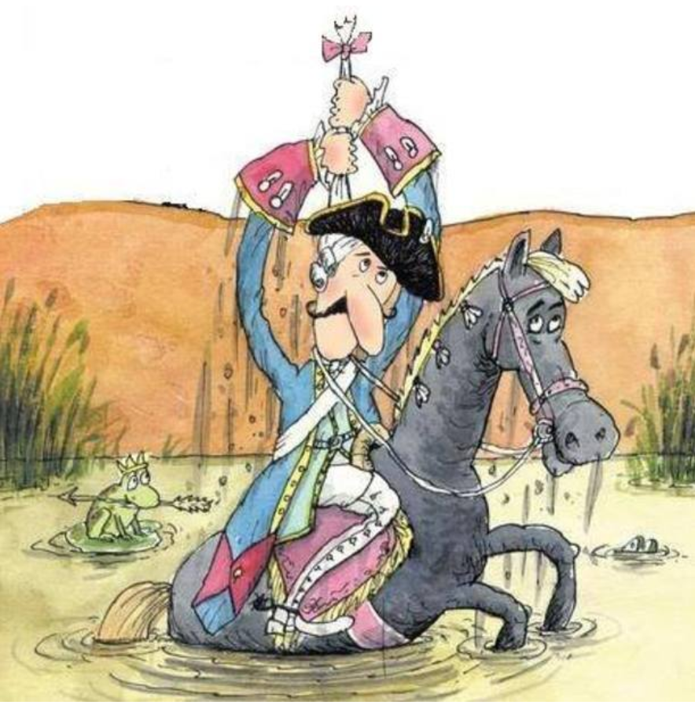

Миссия
Мы видим, что мир становится всё более закрытым и разрозненным. Люди меньше доверяют друг другу, и особенно люди меньше доверяют бизнесам. Потребительские ожидания снижаются: «пусть будет быстро и приемлемо, остальное неважно». Людям всё чаще бывает всё равно.
Мы несём культуру доверия и открытости. Мы повышаем ожидания и вовлекаем в новый потребительский опыт.
Делаем пиццу, чтобы открыть мир
Мы хотим сделать весь мир более открытым, а в процессе — открыть его для себя.
Логотип
Наш неизменный фирменный знак — птица Додо, маврикийский дронт, окрытый, доверчивый и вечно бегущий.

Подпись к картинке
Это была крошечная пиццерия, расположенная в подвале без окон довольно неказистого одноэтажного здания. Работала она только на доставку. Вход в нее вел со двора — через довольно непрезентабельную железную дверь.

Подпись к картинке
Подпись к картинке
В 2011 году план покорения мира, придуманный Федором Овчинниковым, казался нелепой фантазией, пустыми мечтаниями наивного энтузиаста.

Подпись к картинке
В «Додо Пицце» использовали лучшее, что только можно было купить за разумные деньги, и внимательно следили за свежестью и чистотой продуктов.
Некоторые менеджеры просто не знали, как еще заставить сотрудников своей компании работать и делать то, что надо. Ведь не так уж мало на свете людей, которые ленивы и не слишком ответственны, а значит, единственный способ стимулировать их — наказать рублем.
Но эффект получался обратный. Сотрудники чувствовали себя несправедливо обиженными — и зачастую не зря. А обиженный человек — плохой работник. В лучшем случае он начинает выполнять свои обязанности спустя рукава и боится сделать что-нибудь не так. Уронив на пол огурец, он не выбросит его, как предписывают правила, а положит обратно в блюдо, чтобы стоимость огурца потом не вычли из его зарплаты.
Поначалу Федору Овчинникову страшно было отменять все штрафы. Как и многим предпринимателям, ему казалось, что совсем без штрафов обойтись нельзя. Поэтому в «Додо Пицце» на Первомайской не наказывали рублем курьеров, если приходилось отдать бесплатно пиццу, но иногда штрафовали сотрудников за серьезные нарушения дисциплины.
Цвет
The Holy Trinity
Наши цвета — оранжевый, белый и черный.
Главный цветовой идентификатор бренда.
В случаях, когда мы хотим сообщить, что это — мы, заливаем носитель оранжевым.
Отражает чистоту и открытость — принципы компании.
Идеален для базового текста.
Дисплейные цвета
RGB 255 255 255
HEX #FFFFFF
Печатные цвета
CMYK 0 75 95 0
Pantone 1505 U
Oracal (641/8300/8500 Series) 034 Orange
CMYK 0 0 0 0
White
Oracal (641/8300/8500 Series) 010 White
CMYK 0 0 0 100
Black
Oracal (641/8300/8500 Series) 070 Black
Дополнительные цвета
В основном мы используем дополнительные цвета для кодирования продуктов в меню: мясные продукты и продукты без мяса, холодные и горячие напитки, десерты и салаты.
Мы также кодируем продуктовые семейства (группы, категории). Эти цвета должны подчеркивать (выделять, пояснять) вкус или настроение продукта (например, розовый цвет семейства продуктов на основе мороженого или розово-серые цвета для пасты).
описание дополнительных цветов и правила их использования
ВКОД+
Додо Пицца — многоуровневый бренд. У нас несколько пересекающихся аудиторий, ключевых идей и контекстов взаимодействия. Что и как мы говорим, зависит от ситуации и опирается на ценности, наиболее релевантные контексту. А ценности, характер бренда и интонация — неизменные.
Первая оценка, которую мы получаем от нового клиента: вкусно или нет.
Потом мы сможем многое ему предложить сверх этого, но вкус — это базовая ценность, за которой к нам приходят и ради которой возвращаются.
Вкус — это важно.
Заморачиваемся с ингредиентами. Тщательно выбираем поставщиков. Не экономим на начинке.
Заморачиваемся с режимом хранения ингредиентов, перекладываем с полки на полку, безжалостно выбрасываем просроченное.
Заморачиваемся с тестом. Тщательно подбираем ингредиенты. Совершенствуем рецептуру. Проходим квест из граммов, градусов, процентов и часов с минутами. Строим производственно- распределительные центры, чтобы делать тесто в более предсказуемых условиях, чтобы с увеличением объёмов не снижалось качество.
Продаём только свежую пиццу. В доставке укладываемся в среднем за 34 минуты. На витрине продаём кусочки только час, потом безжалостно выбрасываем.
Заморачиваемся с кофе. Выбираем стопроцентную арабику, контролируем обжарку, режим хранения, только высокотехнологичные кофемашины (самые дорогие автоматические машины, чтобы везде было ок)
Всем-всем-всем, включая случайных людей
Для нас это шанс стать «своими» и повторные заказы
Наш продукт — не только пицца.
Кроме пиццы у нас покупают доставку как услугу и пиццерию как место, где можно провести время. И ещё у нас покупают бренд — как обещание качества.
От качества доставки и пиццерии зависят продажи пиццы.
Качество — это важно.
Качественная пицца. Это значит: вкусная и свежая.
Качественное меню. Это значит: есть блюда на любой вкус, они всегда в наличии.
Качественный заказ. Это значит: удобный сайт и мобильное приложение, минимальное количество действия, удобные способы оплаты, контроль статуса доставки.
Качественная доставка. Это значит: быстро, вежливо, приветливо, чётко.
Качественная пиццерия. Это значит: чисто, уютно, есть места для разных компаний, кассиры приветливые и толковые, не надо долго ждать, есть чем занять детей.
Стандарты. Все наши критерии качества во всех проявлениях зафиксированы в виде инструкций и стандартов.
Додо ИС. Даёт исчерпывающую информацию, позволяет своевременно принимать меры, видеть проблемы, искать решения.
Нашей широкой аудитории — людям, которым не всё равно
Для нас это:
Мировозрение. Мы считаем, что открытость делает мир лучше. Открываться — значит доверять людям, верить в их лучшие намерения.
Внутренняя потребность. Мы не боимся критики, у нас нет паранойи и скованности. Мы хотим делиться.
Стиль в коммуникации. Мы не прячем фейлы и рассказываем интересные подробности, это подкупает и формирует доверие.
Инструмент контроля качества. У нас всё на виду и каждый может проверить соблюдение стандартов.
Открытость — это важно.
Открытая кухня
Стеклянные стены. Нет потайных уголков, весь процесс всегда перед глазами.
Экскурсии. Регулярно одеваем детей и взрослых в халаты и шапочки, чтобы показать всё изнутри.
Веб-камеры. Каждая кухня непрерывно транслирует картинку с нескольких камер прямо на наш сайт.
Публичный контроль
Тайные покупатели. Не профессиональные наёмники, а специальный клуб, собранный из наших клиентов. Их тысячи и они неподкупны.
Инспекторы чистоты. Выбираем их из числа тайных покупателей и наделяем особыми полномочиями. Самые строгие ребята.
Рейтинг. По результатам проверок каждую неделю обновляется рейтинг пиццерий. Его видят все партнёры. За низкий рейтинг можно лишиться франшизы.
Прозрачный бизнес
День директора. В праздничные дни наши директора становятся за кассы, чтобы помочь коллегам и заодно лучше понять клиентов.
Онлайн-трансляции еженедельных встреч. Каждый понедельник мы начинаем с трёх коротких докладов о новостях, результатах и планах. Всё сразу же появляется в открытом доступе.
Публикация финансовой отчётности. Честно публикуем цифры. Прибыль, убытки, поражения, победы, всё как есть.
Ядру нашей аудитории, всем «Додо-пипл». И фан-клубу предпринимателей.
Для нас это драйвер улучшений, инструмент контроля качества, образ работодателя мечты. А ещё личный кайф и глубокое удовлетворение!
Доверие для нас это:
Осознание силы. Мы не боимся доверять, потому что уверены в себе, своих продуктах и своём взгляде на мир. Мы не одержимы контролем, потому что у нас есть запас прочности. Мы не строим стены, а расширяем границы комфорта.
Способ вести диалог с миром. Нам интересен мир во всей полноте. Мы не хотим диктовать правила, мы хотим и влиять, и учиться.
Видение будущего. Мы играем в долгую. Мы считаем, что в долгосрочной перспективе доверие — это весомое рыночное преимущество.
Доверие — это важно.
Доверяем клиентам.
Например, когда обещаем доставку за час или бесплатную пиццу — успели мы или нет решает клиент, мы верим на слово.
Скидку в день рождения тоже даём без документов.
Если клиент случайно разлил кофе, мы без вопросов сделаем новый бесплатно.
Если поступает жалоба, мы не сомневаемся, а бежим исправлять.
Доверяем партнёрам.
Новому партнёру открываем доступ к информации безо всяких НДА и платежей.
Доверяем мнению и видению партнёров — новые форматы, нестандартные ситуации, новые продукты, поддерживаем инициативу.
Доверяем миру.
Рассказываем всё как есть. Признаём уязвимости, и верим, что никто специально не желает нам зла. Внимательно слушаем критику.
В первую очередь наше ядро, додо-пипл. Но и не-всё-равно ребята тоже. И сообщество друзей.
В конечном счёте открытость и доверие нужны, чтобы объединять людей.
Мы создаём среду, в которой люди будут менее безразличными и разрозненными, более открытыми и связанными.
Комьюнити — это самое важное.
Пицца — объединяющий продукт. Её редко заказывают для одного, чаще для двоих или для компании.
Пиццерия — это объединяющее место. К нам часто приходят вдвоём или компаниями. Именно в наших пиццериях часто возникает атмосфера, располагающая к знакомствам. Но можно и не знакомиться, а просто побыть рядом с другими приятными людьми.
Додо Пицца — объединяющий бренд. Мы дружелюбные, любопытные и мы добряки. С нами не страшно быть не идеальным, уязвимым и настоящим.
Аудитория ценности: все-все-все, включая случайных людей.
Аудитория
Мы внимательно смотрим на людей, которые приходят в пиццерии, заказывают доставку, говорят с нами лично и в интернете. Кажется, мы знаем о них довольно много. У нас есть ядро аудитории, мы называем их «Додо-пипл», есть несколько стабильных сегментов и есть отдельная группа людей, которые болеют за нас и следят за новостями.
Додо-пипл
Люди, для который Додо Пицца — не пустой звук. Они нас любят и понимают, а мы любим и понимаем их лучше, чем кто-либо ещё. И эти люди чаще других приходят с нами работать.
Работающие молодые люди, создатели и коммуникаторы. Стремятся к признанию, ищут востребованности, шарят в технологиях, любопытные и социально активные. Им важно выстраивать отношения, важен имидж, важно общаться и искать новые впечатления.
Мы даём им ощущение праздника, беззаботность, возможность вырываться из рутины. Мы нужны им, чтобы они могли с кем-то нами поделиться. Для них мы должны быть трендовыми и нескучными.
Не всё равно
Это наиболее широкая часто аудитории — самые разные люди, которых объядиняет одна важная вещь: им не всё равно. Не всё равно, что есть, где жить и работать, как выглядеть и с кем дружить. Они заботятся о себе и близких, они неравнодушны — в самом широком смысле этого слова.
Школьники и студенты. Социально помешанные, немного хаотичные, очень открытые и лояльные.
Им важна комфортная атмосфера, причастность к чему-то важному и отсутствие «взрослых».
Для них мы должны быть крутыми и максимально доступными.
Одиночки. Самые разные люди, часто заказывающие пиццу в качестве еды, когда надоедают бутерброды и пельмени.
Для них мы должны быть удобными и немного праздничнее пельменей.
Взрослые профессионалы. Рациональные, внимательные, необязательно лояльные.
Им важен вкус, важна стабильность ассортимента и предсказуемость сервиса.
Для них мы должны быть надёжными, без сюрпризов.
Молодые пары. Заглядывают, чтобы вырваться из повседневности. Заказывают, чтобы добавить немного праздничного настроения и создать иллюзию свидания.
Для них мы должны быть вкусными, чёткими и приветливыми.
Семьи с детьми. Положительные, не сфокусированные, требовательные, лояльные. Проблемы: ограниченный круг общения, день сурка, недосып, тревога.
Важна комфортная атмосфера, возможность расслабиться.
Пенсионеры с внуками. Внимательные, требовательные, не всегда лояльные.
Важна цена, важна супер-понятность.
Полетит или нет?
С самого начала к нам было приковано внимание тысяч молодых предпринимателей и специалистов. Эти люди необязательно заказывают нашу пиццу, они могут даже жить в городах, где мы пока не открылись. Но они знают нас и им интересно, как у нас дела.
Фан-клуб предпринимателей. Могут любить нас или посмеиваться над нами, но при этом рассказывать друзьям в барах и на кухнях нашу историю.
Им важно, чтобы мы оставались собой и держали слово, продолжали быть открытыми.
Tone of voice
Интонация — это основная вибрация, исходящая от нас всех. Это стиль общения. Это то, как мы ведем себя по отношению к клиенту. Мы избегаем излишней официальности, но не нарушаем личного пространства клиента, не задеваем его достоинство. В любой точке контакта мы простые для восприятия, открытые и ответственные. Наш продукт - самый лучший, мы гордимся им, но не кричим об этом, не выставляем напоказ, не заискиваем, а доказываем это нашим отношением. Мы уважаем нашего клиента и до последнего доверяем ему без всяких условностей.
А еще мы любим пошутить, в том числе и сами над собой, потому что юмор помогает сократить дистанцию и располагает. Но делаем мы это осторожно, чтобы никого не обидеть. Также наши принципы простоты, общности, доступности и доверчивости ведут к тому, что мы стараемся мягко обходить вызывающие темы, в которых много острых углов. Поэтому наши соцсети, реклама, рестораны и другие точки контакта — не место для упоминаний о сексе, пагубных привычках, политике, религии, проявления излишнего патриотизма.
Язык
Язык нашей коммуникации максимально простой и доступный. Нашим языком можно объяснить что угодно даже 5-летнему ребенку или 80-летней бабушке. Мы любим всё упрощать, а не усложнять. Но не впадаем в крайности. Так как наша аудитория очень широкая и разнообразная, мы предпочитаем обращаться ко всем на “вы”. При этом мы не стесняемся молодежных и современных выражений, если они помогают доступнее объяснить что-то. Однако избегаем вульгарностей. И это касается как вербальных носителей (тексты писем, сообщений, аудио-реклама, копирайт), так и невербальных (дизайн макетов, видео, музыка, упаковка, униформа…)
Пример
Банк: Добрый день, Игорь Сергеевич! Уведомляем Вас о том, что на Ваш расчётный счёт поступили средства в размере 20 тысяч 00 копеек. Просим Вас обратиться в отделение банка для прохождения процедуры оформления получения перевода.
Додо Пицца: Здравствуйте, Игорь! Представьте, что ваш личный кабинет на сайте - это карман зимней куртки. И заглянув туда, вы найдёте 500 Додо-рублей. Это ли не радость? Бонусы были начислены вам за прохождение опроса. Хорошего дня :)
Цель
Построение любой коммуникации с клиентом стремится к определенной цели. Наши интонация и язык помогают двигаться к ней максимально прозрачным и доступным способом. Если не получается описать цель нашим языком и с нашей интонацией, то скорее всего эта цель не имеет для нас ценности.
Пример
Представим, что в параллельной вселенной сеть ювелирных салонов предложила нам провести совместную акцию, которая предполагает элитные призы и алмазные россыпи для участников. Такого рода партнерство выглядит для нас экономически привлекательным. Но мы знаем что аудитория участников — это в основном высокопоставленные должностные лица и владельцы крупных бизнесов. Такой контингент привык к определенному стилю коммуникации, крайне официальному и нарочито доброжелательному тону. Вряд ли мы смогли бы правильно донести до них ценность конкурса посредством собственного вербального и невербального языка. Такое противоречие заставляет пересмотреть цель или средства ее достижения.
Резонанс
Обратная связь - наилучший показатель того, как работает TOV. Как известно, человеку свойственно перенимать манеру разговора собеседника, который ему симпатичен. Если мы видим, что в процессе коммуникации клиенты повторяют наши язык и интонацию, это значит, что мы верно смогли донести до них свои ценности посредством голоса.
Если кратко, то наш tone of voice дружелюбный, располагающий, уравновешенный, простой, ироничный, эмоциональный, молодой, уверенный, вдохновляющий.
Примеры:
Попробуйте наш новый восхитительный кофе. Он создан из специально отобранных зёрен арабики. Почувствуйте пленительную силу его бодрящего аромата. Ощутите нежный и в то же время интенсивный вкус, наполняющий энергией на весь день.
Попробуйте наш новый кофе! Мы слегка изменили смесь зёрен и способ обжарки. Чтобы напиток стал еще ароматнее, насыщенней и вкуснее. Хочется стаканчик бодрящего? Вэлкам в нашу пиццерию!
Новая пиццерия «Додо Пицца» открывает свои двери для гостей. К Вашим услугам комфортабельные мягкие диванчики, удобные столики из натурального дерева и детская комната.
Разнообразное меню предлагает ароматную традиционную пиццу с травами на пышном тесте, закуски, лёгкие десерты, горячие и прохладительные напитки. В самом центре города, всего в 300 метрах от пл. Ленина.
Мы совершили открытие, ура! В центре города теперь есть «Додо Пицца». Это семейная пиццерия, в которой есть даже игровая для детей.
Меню включает салаты, десерты, закуски, напитки. И конечно же нашу гордость - свежую пиццу на пышном тесте и с хрустящим бортиком. Прямо из печи!
Что вы здесь устроили? Вещи собрали и на выход! Я сейчас ментов вызову (реальный пример).
Просим вас перестать шуметь либо покинуть пиццерию, потому что это мешает другим гостям. В противном случае нам придётся вызвать охрану.
Ваззап, братишки, чокаво? Для нас запилить вам быстрого хавчика - изечки. Наши парниши прилетят на крыльях ночи как бодрые спэйс-ковбойз в течение часа. Йо!
Привет, друзья! Быстро доставить пиццу, пока та еще горячая? Это про нас. Проворный курьер домчится к вам менее, чем за час!
А ты уже заценил нашу новую бомбическую пиццулю?
А вы уже вы уже пробовали нашу новую пиццу?
Характер
Молодой, открытый, любознательный, находчивый, яркий, жизнерадостный, энергичный, увлеченный, ответственный, передовой, амбициозный, рискующий, доверчивый.
Открытый (но не слишком уж)
Мы не притворяемся и не стыдимся собственных мыслей, поступков и неудач. Мы всегда готовы к диалогу и с радостью прислушиваемся к чужому мнению. Нам не нравится лицемерие, поэтому мы всегда честны и прямолинейны, но при этом сохраняем душевность и доброту.
Любознательный и интересующийся
Мы, словно дети, постоянно интересуемся, как устроен мир. В наших головах бесконечно вертится вопрос «Почему?». Для нас не бывает обыденных и скучных вещей. Мы хотим узнать в жизни всё-всё-всё!
Доверчивый (но не глупый)
Мы слегка наивны в своей вере в лучшее, в людей, в светлое будущее, в то, что можно быть открытыми и успешными. Нас не переубедить, что все вокруг хорошие, только если они не докажут обратное сами.
Молодой (но не детский, не инфантильный)
Мы молоды душой и телом. Даже спустя много лет мы хотим оставаться юными, гибкими, активными и меняющими мир.
Увлечённый
Мы по-настоящему получаем удовольствие от всего, за что беремся. Задачи любой сложности приводят нас в восторг, потому что мы видим в них возможность улучшить мир.
Находчивый
Из любой сложной ситуации мы умеем находить нестандартные выходы. Мы видим жизнь настолько удивительной и многогранной, что зачастую мыслим не так, как привыкло большинство людей.

Яркий
Мы ценим яркие краски жизни, и сами любим заявлять о себе. Нам нравится выделяться, быть броскими, но не вульгарными.
Принципы
Мы же не просто так тут каждый раз как в первый раз, нет, мы с умыслом. И весь этот умысел в той или иной степени отражается в трёх простых вещах. Простых, да не таких-то и простых, но это уже не нам судить.
Принцип намба ван:
Лёгко и просто
— Тонкие штрихи в шрифтах и иллюстрациях
— Свободная верстка
— Чистые цвета
— Неперегруженность, легкость восприятия макетов (один носитель p — одно сообщение)
— Понятный текст с простыми заголовками и названиями
— Отсутствие чрезмерных спецэффектов (три-дэ, тени, сияния, псевдообъем, градиенты)
Принцип намба ту:
Эмоционально
— Позитивные интерпретации
— Живые фотографии и иллюстрации с идей, с твистом
— Живой, эмоциональный (нестандартный) копирайтинг
— Яркие цвета, если они не спорят с продуктом
Принцип намба фри:
Функционально
— Говорим «Нет!» дизайну ради дизайна (визуальные решения в первую очередь должны выполнять свои функции, а не
—
Анд ван мо финг:
Внимание к деталям
— Следование правилам типографики (длинные и средние тире, правильные кавычки, отсутствие висячих предлогов, свисающая пунктуация и т. п.)
— Естественное изображение продукта (например, мы показываем крошки вокруг пиццы)
— Естественные тени и рефлексы
— Цветовое кодирование продуктов, семейств продуктов и ингредиентов
— Единство в фотографиях:
— Одно направление теней на каталожных фотографиях
— Единое правило расположения пицц и кусочков на каталожных фотографиях
— Единая цветокоррекция для всех продуктов
— Единый подход для похожих макетов (например, стилистика MVP-макетов для тестовых запусков)
Не на поверхности
— Говорим «Нет!» клише и избитым решениям
— Избегаем ассоциаций первого уровня
Реклама
У нас бывает три вида макетов. Продуктовые — это которые про продукты, ну так новую пиццу сделали, или десерты, и ну давай везде рекламировать, что посмотрите какая пицца. Акционный — это когда мы предлагаем какие-то условия, восемь по цене пяти, купи и вот это ещё прихвати, ну и разное такое. А ммиджевый — это про наш бренд, про в целом пиццерии, доставку, что открываемся, что ищем людей, что какие мы молодцы.
Продуктовый макет
Пример и пара комментариев, что тут где и почему
Акционный макет
Пример и пара комментариев, что тут где и почему
Имиджевый макет
Пример и пара комментариев, что тут где и почему
Редполитика
Пару слов, что это такое и зачем
Название «Додо Пицца» в кавычках.
Оба слова раздельно, с большой буквы.
Слово «Пицца» склоняется.
Мы работаем в додопицца.
Мы сотрудники «Додо Пицца».
Мы работаем в «Додо Пицце».
Мы сотрудники «Додо Пиццы».
Обращение к аудитории: от 1-ого лица множественного числа — «мы».
Личное обращение — всегда на «вы» с маленькой буквы.
Клиент внутри пиццерии — всегда «гость».
Я постараюсь помочь вам.
Получи пиццу в подарок!
Клиентам понравился наш кофе.
Мы постараемся помочь вам.
Получите пиццу в подарок!
Гостям понравился наш кофе.
Имена людей — перед фамилией.
Заглавные буквы: для названий компаний, праздников, названий продуктов, ингредиентов.
Обновили соус «барбекю».
Поздравляем с день рождением!
Обновили соус «Барбекю».
Поздравляем с Днём рождения!
Кавычки — всегда «ёлочки». Для названий продуктов, компаний, соцсетей.
В рекламных макетах, в меню и на сайте, в SMS допускаются названия без кавычек.
Пицца “Пепперони” в подарок!
Напишите нам Вконтакте.
Пицца «Пепперони» в подарок!
Напишите нам во «Вконтакте».
Буква «ё», а не буква «е».
Обязательна в именах собственных и в словах, где смысл зависит от ударения.
Привет, Ленчик!
Давайте все передохнем.
Привет, Лёнчик!
Давайте все передохнём.
Запрещено говорить «запрещено».
Запрещено рвать салат руками.
Не рвите салат руками, а нарежьте его ножом.
Заголовки текстов: с большой буквы и без точки в конце.
запускаем новую сезонную пиццу:
Запускаем новую сезонную пиццу
Иностранные названия: на русском и в кавычках при первом упоминании в тексте. Рядом в скобках — оригинал без кавычек.
Исключение могут составлять тексты в SMM, SMS.
Совместная акция с Delivery Club.
Совместная акция с «Дэливери Клаб» (Delivery Club).
Сокращения:
физические величины (м, см, г, кг) —
без точки;
усечённые слова (шт., руб.) — с точкой.
Исключение — рекламные макеты, меню.
Заказали 100 кг. муки и заплатили 10 000 руб поставщику.
Заказали 100 кг муки и заплатили 10 000 руб. поставщику.
Порядок списка контактов: имя, фамилия, должность, электронный адрес, телефон, остальные соцсети.
Менеджер Иванов Андрей, skype: a.ivanov, a.ivanov@altek.ru, 8 8212 83-83-67, доб. 56, +7 900 678-56-37
Андрей Иванов
Менеджер
a.ivanov@altek.ru
8 8212 83-83-67, доб. 56
+7 900 678-56-37
skype: a.ivanov
Эмодзи — только в СММ и Digital.
Не заменяют слова.
Не нумеруют и не маркируют списки.
Не более трёх подряд.
И вообще лучше без них.
🎉🎉🎉 Попробуйте новую 🍕 с халапеньо! 💣💥 В составе:
📌 Пепперони
📌 Томатный соус
📌 Моцарелла
📌 Орегано 🙌
Попробуйте новую пиццу с халапеньо! В составе: пепперони, томатный соус, сыр «Моцарелла», орегано.
Неразрывные пробелы для склеивания предлогов, союзов, частиц и междометий с главным словом при переносе строки. Можно проверять с помощью «Типографа».
Мороженое, молоко и
печенье «Орео».
Мороженое, молоко
и печенье «Орео».
Восклицательный и вопросительный знак — без пробела после последнего слова в предложении.
«!» или «?!» — только для действительно эмоциональных сообщений. Много знаков подряд не используем.
ЗДРАВСТВУЙТЕ !!! Курьер приехал к вам вовремя ???!
Здравствуйте. Курьер приехал к вам вовремя?
Здравствуйте! Курьер приехал к вам вовремя?
Пишем грамотно. В соответствии с правилами языка.
gramota.ru
Закожите пиццу и мы, приедим менее чем за 60 минут!!
Закажите пиццу, и мы приедем менее, чем за 60 минут.